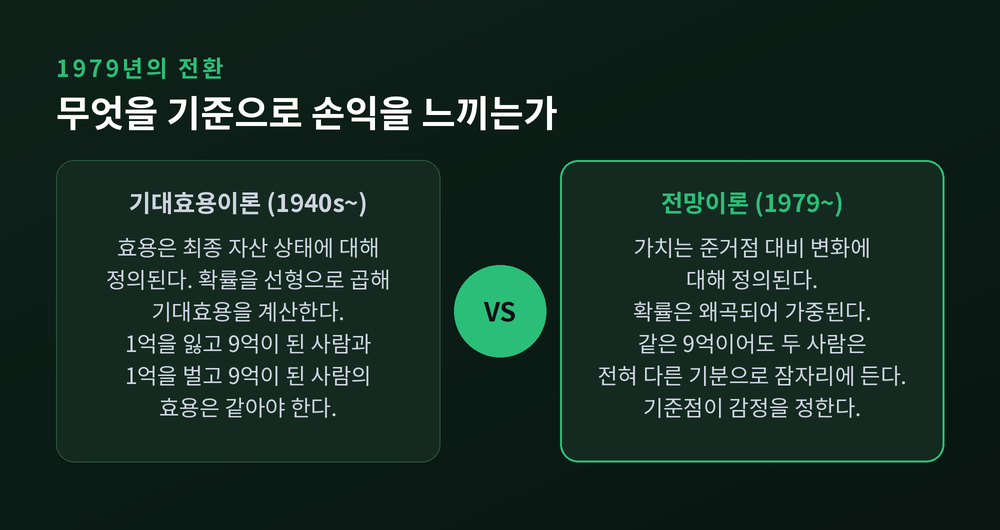
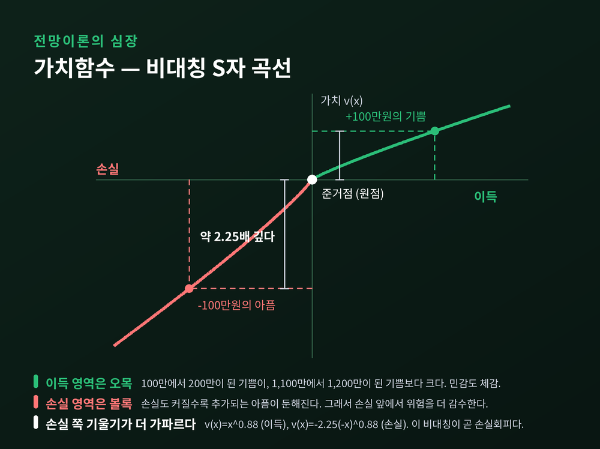
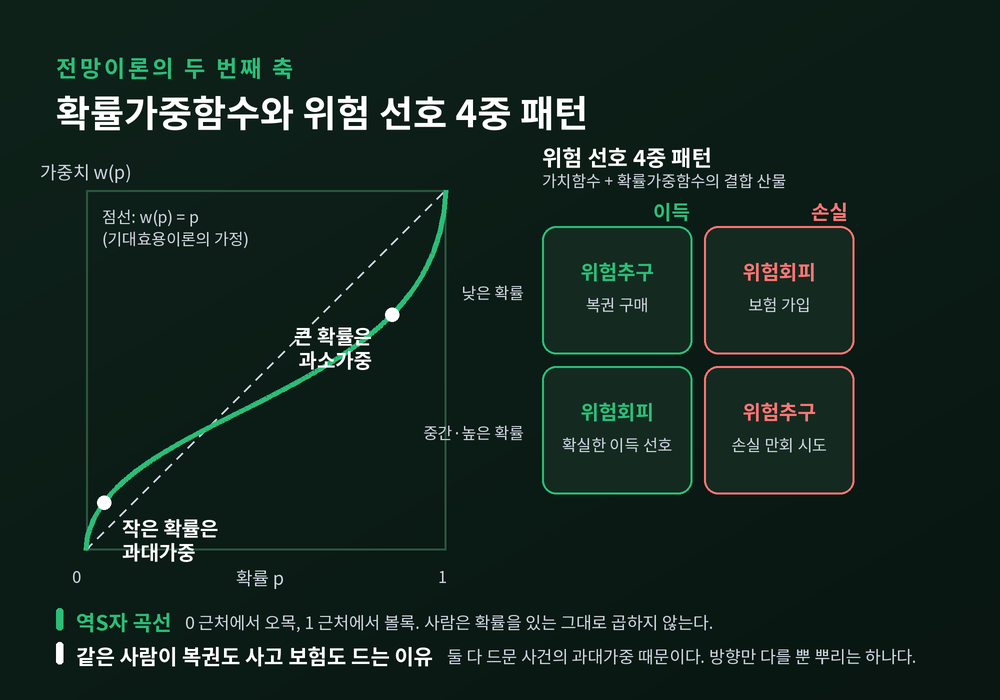
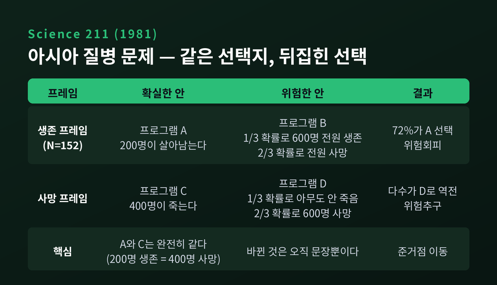
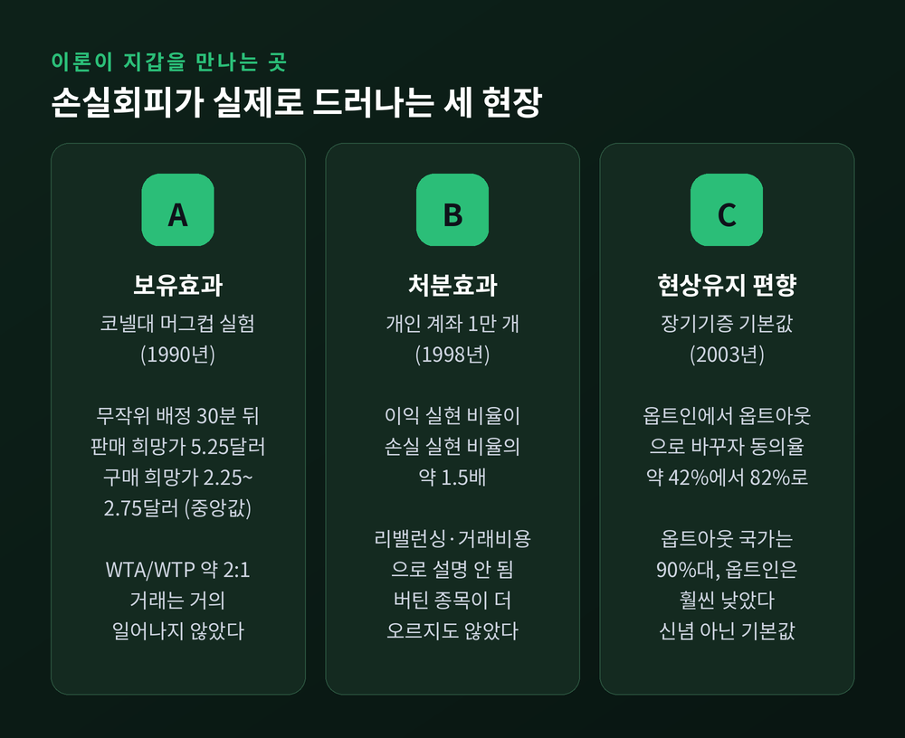
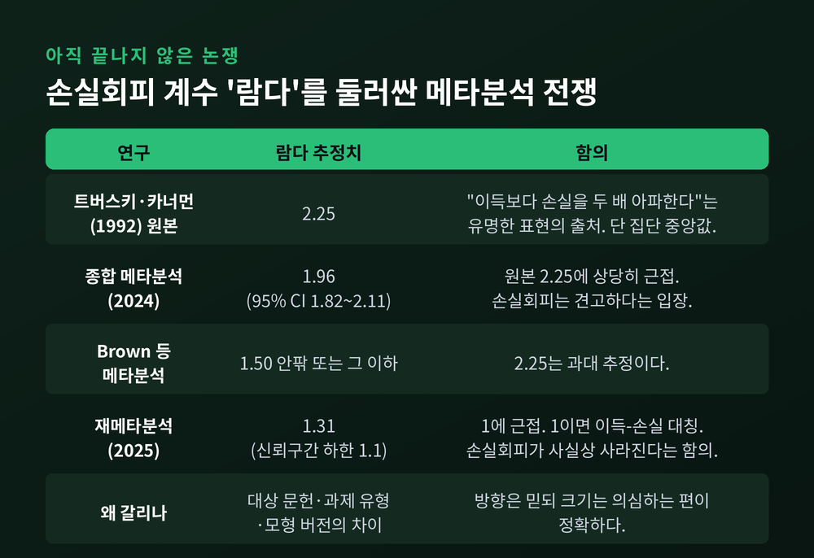

이번 글에서는 행동경제학의 뿌리인 전망이론을 정리해 보겠습니다.
먼저 결론부터 말씀드립니다. 첫째, 사람은 최종 재산이 아니라 준거점 대비 변화로 손익을 느낍니다. 둘째, 같은 크기라면 손실이 이득보다 대략 두 배가량 크게 다가옵니다. 셋째, 이 '두 배'라는 숫자는 아직 학계에서 논쟁 중입니다.
이 세 가지가 왜 중요한지, 그리고 어디서 우리 지갑을 흔드는지 차근차근 짚어보겠습니다.
20세기 중반 주류 경제학의 표준 모형은 기대효용이론이었습니다.
폰 노이만과 모르겐슈테른이 공리 체계로 다듬은 이론입니다. 계산법은 단순합니다. 각 결과의 효용에 확률을 선형으로 곱하고, 그 합이 가장 큰 대안을 고른다는 것입니다.
여기서 핵심은 효용의 기준점입니다. 기대효용이론에서 효용은 최종 자산 상태에 대해 정의됩니다. "지금 내 총 재산이 얼마가 되는가"만 중요하지, "얼마를 벌었나, 얼마를 잃었나"는 원칙적으로 무관합니다.
10억을 가진 사람이 1억을 잃어 9억이 되든, 8억을 가진 사람이 1억을 벌어 9억이 되든, 두 사람의 효용은 같아야 합니다.
과연 그럴까요.
1953년, 프랑스 경제학자 모리스 알레가 균열을 냈습니다. 기대효용이론의 독립성 공리를 정면으로 겨눈 문제였습니다.
구조는 이렇습니다. 정교하게 짠 두 쌍의 복권 선택 문제를 제시합니다. 다수의 응답자는 첫 번째 쌍에서 확실한 중간 이득을 기대값이 더 높은 도박보다 선호합니다. 그런데 두 쌍에 공통으로 들어 있던 결과를 똑같이 덜어내면, 이번엔 오히려 위험한 고수익 도박을 고릅니다.
기대효용이론은 이 역전을 허용하지 않습니다. 공통 결과를 더하거나 빼도 선호 순서는 그대로여야 하기 때문입니다.
전통적 해석은 확실성 효과입니다. 사람은 "확실한" 결과에 "매우 높은 확률"의 결과보다 불균형하게 큰 가중치를 준다는 것입니다.
다만 이 해석이 정설로 굳은 것은 아닙니다. 최근에는 사람들이 특별히 싫어하는 것은 확실성의 상실이 아니라 '아무것도 못 받는 상태'라는 '0 회피 효과' 주장이 제기되었습니다. 확실성 효과 자체의 증거가 약하거나 없다는 지적입니다.
균열은 분명했지만, 대체할 건물은 아직 없었습니다.
대니얼 카너먼과 아모스 트버스키가 그 건물을 지었습니다.
「Prospect Theory: An Analysis of Decision under Risk」. 1979년 3월 『Econometrica』 47권 2호 263–291쪽. 지난 반세기 경제학에서 가장 많이 인용된 논문 중 하나로 꼽힙니다.
두 사람은 기대효용이론이 규범 이론으로는 몰라도 기술 이론으로는 틀렸다고 못 박았습니다. "사람이 어떻게 결정해야 하는가"는 몰라도, "사람이 실제로 어떻게 결정하는가"는 설명하지 못한다는 뜻입니다.
전망이론은 세 개의 축 위에 서 있습니다.
첫째, 준거점 의존성. 가치는 최종 자산 상태가 아니라 준거점 대비 변화에 대해 정의됩니다. 앞서 든 9억 이야기로 돌아가면, 1억을 잃고 9억이 된 사람과 1억을 벌고 9억이 된 사람은 전혀 다른 기분으로 잠자리에 듭니다. 당연한 이야기 같습니까. 기대효용이론은 이 당연함을 담지 못했습니다.
둘째, 손실회피. 손실의 가치가 동등한 크기 이득의 가치보다 큽니다.
셋째, 확률가중. 사람은 확률을 있는 그대로 곱하지 않습니다. 왜곡해서 씁니다.
여기에 두 가지 현상이 따라붙습니다. 확실성 효과 — 단지 '확률적'인 결과를 '확실하게' 얻는 결과에 비해 과소가중하는 경향입니다. 이 경향이 확실한 이득 앞에서는 위험회피를, 확실한 손실 앞에서는 위험추구를 낳습니다. 그리고 반사 효과 — 부호가 뒤집히면 위험 선호도 함께 뒤집힙니다.

전망이론의 심장은 가치함수입니다. 생김새가 곧 이론입니다.
세 가지 특징이 있습니다.
원점은 준거점입니다. 이득 영역은 오목하고 손실 영역은 볼록합니다. 민감도가 체감한다는 뜻입니다. 100만원에서 200만원으로 늘어난 기쁨이, 1,100만원에서 1,200만원으로 늘어난 기쁨보다 큽니다. 손실 쪽도 같습니다.
그리고 결정적인 세 번째. 손실 쪽 기울기가 이득 쪽보다 훨씬 가파릅니다.
1992년 트버스키와 카너먼은 이 곡선을 누적전망이론으로 정교화하며 수식을 붙였습니다.
여기서 α와 β는 민감도 체감을, λ가 손실회피를 담당합니다. 두 사람이 추정한 표준 파라미터는 α = β = 0.88, λ = 2.25, 확률가중 곡률은 이득 쪽 0.61, 손실 쪽 0.69였습니다.
바로 이 λ = 2.25가 "이득보다 손실을 두 배 아파한다"는 유명한 표현의 출처입니다.
실감 나는 예를 들어보겠습니다. 동전을 던져 앞면이면 110만원을 받고 뒷면이면 100만원을 잃는 내기가 있습니다. 기댓값은 +5만원. 계산기 인간이라면 응합니다. 그런데 대부분 거절합니다. λ가 2.25라면 100만원의 손실은 225만원어치 아픔이고, 110만원의 이득은 110만원어치 기쁨에 그치니까요.

두 번째 축은 확률을 다루는 방식입니다.
확률가중함수 w(p)는 역S자 모양입니다. 0 근처에서는 오목하고 1 근처에서는 볼록합니다. 풀어 쓰면 이렇습니다.
작은 확률은 과대가중하고, 중간에서 큰 확률은 과소가중합니다.
가치함수와 확률가중함수를 겹치면 4중 패턴이라는 지도가 나옵니다. 낮은 확률의 이득 앞에서는 위험추구, 낮은 확률의 손실 앞에서는 위험회피. 중간에서 높은 확률의 이득 앞에서는 위험회피, 같은 확률의 손실 앞에서는 위험추구.
이 지도가 오랜 수수께끼 하나를 풉니다. 같은 사람이 왜 복권도 사고 보험도 드는가.
두 행동은 정반대로 보입니다. 복권은 위험을 사는 일이고 보험은 위험을 파는 일이니까요. 기대효용이론으로는 한 사람 안에 이 둘을 나란히 놓기 어렵습니다.
전망이론은 간단히 답합니다. 둘 다 드문 사건의 과대가중 때문입니다. 1등 당첨 확률도, 집이 불탈 확률도 실제보다 크게 느껴집니다. 방향만 다를 뿐 뿌리는 하나입니다.

준거점이 얼마나 무른지 보여준 실험이 있습니다. 1981년 『Science』 211권에 실린 프레이밍 연구입니다.
문제는 이렇게 시작합니다. "미국이 특이한 아시아 질병의 발생에 대비하고 있다고 상상해 보라. 이 병으로 600명이 사망할 것으로 예상된다."
생존 프레임을 받은 152명에게는 이렇게 물었습니다. 프로그램 A는 200명이 살아남는다. 프로그램 B는 1/3 확률로 600명 전원이 살아남고 2/3 확률로 아무도 살아남지 못한다.
72%가 A를 골랐습니다. 확실한 쪽, 위험회피입니다.
사망 프레임은 이렇습니다. 프로그램 C는 400명이 죽는다. 프로그램 D는 1/3 확률로 아무도 죽지 않고 2/3 확률로 600명이 죽는다.
이번엔 다수가 D로 넘어갔습니다. 위험한 쪽, 위험추구입니다.
여기서 잠깐 멈춰 보시길 권합니다. A와 C는 수학적으로 완전히 같은 선택지입니다. 600명 중 200명이 사는 것과 400명이 죽는 것은 같은 말입니다. 바뀐 것은 오직 문장뿐입니다.
그런데도 선택이 뒤집혔습니다. '살린다'는 말이 준거점을 0명에 두고, '죽는다'는 말이 준거점을 600명에 둔 탓입니다. 준거점이 옮겨가자 같은 결과가 이득이 되기도, 손실이 되기도 했습니다.
이 실험은 재현성 검증에서도 살아남았습니다. "정확히 200명"처럼 문구를 엄밀히 다듬어도 효과는 견고하게 나타났습니다. 다만 시간 압박이나 질병 유형 같은 조건에 따라 효과 크기가 달라진다는 조절변수 연구도 함께 나와 있습니다.

이론이 실험실 밖으로 나오면 어떻게 될까요.
1990년 카너먼과 크네치, 세일러가 『Journal of Political Economy』에 실은 코넬대 머그컵 실험이 고전입니다.
설계는 단순합니다. 학부생을 무작위로 둘로 나눕니다. 한쪽에는 6달러쯤 하는 대학 로고 머그컵을 주고, 다른 쪽에는 아무것도 주지 않습니다. 30분 뒤 거래 시장을 엽니다. 시장은 6달러 근처에서 청산되어야 정상입니다.
결과는 이랬습니다. 판매 희망가 중앙값 5.25달러, 구매 희망가 중앙값 2.25~2.75달러. WTA/WTP 비율이 대략 2:1이었고, 실제 거래는 거의 일어나지 않았습니다.
머그컵은 불과 몇 분 전 무작위로 배정된 물건입니다. 어느 쪽도 사전에 그 컵을 좋아할 이유가 없었습니다. 그런데 '내 것'이 되었다는 사실 하나가 지각 가치를 두 배로 만들었습니다.
파는 사람에게 머그컵을 넘기는 일은 손실입니다. 사는 사람에게 머그컵을 얻는 일은 이득입니다. 같은 컵인데 준거점이 다르니 값도 다릅니다.
이 실험이 특히 설득력을 얻은 이유는 거래비용이나 소득효과 같은 대안 설명을 배제하는 장치를 갖췄기 때문입니다. 이듬해 세 사람은 보유효과와 손실회피, 현상유지 편향을 하나의 계열로 묶어 정리했습니다.
머그컵은 6달러짜리입니다. 돈이 진짜 걸리면 달라질까요.
테런스 오딘이 1998년 『Journal of Finance』에서 답했습니다. 대형 할인 증권사의 개인 계좌 1만 개 거래 기록을 뒤진 연구입니다.
결과는 선명했습니다. 투자자들은 손실 종목보다 이익 종목을 실현하려는 강한 선호를 보였습니다. 미국 투자자 기준으로 이익 실현 비율이 손실 실현 비율의 약 1.5배였습니다.
오딘은 흔한 변명들을 하나씩 지웠습니다. 포트폴리오 리밸런싱 때문도 아니었습니다. 저가주 거래비용을 피하려는 것도 아니었습니다. 결정적으로, 버틴 종목이 나중에 더 오르지도 않았습니다. 이후 수익률로 정당화되지 않았다는 뜻입니다.
오히려 과세 계좌에서는 명백한 손해였습니다. 세후 수익률을 떨어뜨렸습니다.
흥미로운 대목은 12월입니다. 절세 목적 매도가 이때 두드러졌습니다. 유인이 충분히 강해지면 행동이 일부 교정된다는 신호입니다. 대만 개인투자자를 대상으로 한 후속 연구에서도 비슷한 처분효과가 확인되었습니다.
"오른 종목은 팔아서 이익을 확정하고, 물린 종목은 본전 올 때까지 들고 간다." 익숙한 문장 아닙니까. 이것이 처분효과입니다.

손실회피는 개인 계좌를 넘어 시장 전체를 설명하는 데도 동원되었습니다.
주식 프리미엄 퍼즐이라는 오랜 난제가 있습니다. 지난 한 세기 동안 주식이 채권을 크게 앞질렀는데, 이 프리미엄의 크기를 기존 경제학으로 설명하려면 비현실적으로 높은 위험회피 계수가 필요하다는 문제입니다.
1995년 베나치와 세일러가 『Quarterly Journal of Economics』에서 답을 내놓았습니다. 두 조각을 붙인 설명이었습니다.
하나, 투자자는 손실회피적이다. 둘, 장기 투자자조차 포트폴리오를 자주 들여다본다. 이 둘을 합친 것이 근시안적 손실회피입니다.
시뮬레이션 결과가 인상적입니다. 투자자가 포트폴리오를 약 1년 주기로 평가한다고 가정하면, 전망이론의 기존 파라미터만으로 실제 주식 프리미엄의 크기가 설명되었습니다. 30년을 보고 투자한다는 사람도 실제로는 1년짜리 시간지평으로 행동하는 셈입니다.
물론 이후 연구에서는 근시안적 손실회피 가설을 지지하는 증거와 반박하는 증거가 모두 나왔습니다. 결론이 닫힌 문제는 아닙니다.
여기서 방향이 한 번 꺾입니다.
편향을 없애려는 대신, 편향이 있는 채로 잘 살게 설계하자는 발상입니다.
Save More Tomorrow가 대표작입니다. 2004년 세일러와 베나치가 설계했습니다. 지금 당장 저축을 늘리라고 설득하지 않습니다. 대신 미래의 임금 인상분에서 저축률이 자동으로 오르도록 미리 약정하게 합니다. 지금 손에 쥔 돈은 줄지 않습니다. 손실이 발생하지 않으니 손실회피가 발동하지 않습니다.
결과입니다. 참여자 평균 저축률이 40개월에 걸쳐 3.5%에서 13.6%로 올랐습니다. 임금 인상을 네 번 지난 뒤에도 78%가 남아 있었습니다.
더 인상적인 것은 참여율의 대비입니다. "지금 당장 저축을 늘리라"는 조언을 받아들인 사람은 28%에 그쳤습니다. 그런데 그 조언을 거절한 사람들 가운데 78%가 "미래에 연 3%씩 늘리는 것"에는 동의했습니다. 같은 사람, 다른 프레임입니다.
이 실험은 결국 법이 되었습니다. 2022년 12월 미국 의회의 SECURE 2.0은 대부분의 신규 401(k) 플랜에 자동 가입과 연 1%p 자동 인상을 2025년부터 기본값으로 규정했습니다.
기본값의 힘을 보여준 또 하나의 사례는 장기기증입니다. 2003년 존슨과 골드스틴이 『Science』에 실은 「Do Defaults Save Lives?」입니다. 옵트인에서 옵트아웃으로 기본값을 바꾸자 온라인 실험에서 동의율이 약 42%에서 약 82%로 거의 두 배가 되었습니다. 유럽 국가 비교에서도 옵트아웃 국가는 유효 동의율이 90%대에 몰린 반면, 옵트인 국가는 훨씬 낮았습니다. 일부는 한 자릿수였습니다.
이 격차를 설명하는 설문은 없었습니다. 차이를 만든 것은 신념이 아니라 기본값이었습니다.
다만 그늘도 봐야 합니다. 옵트아웃 기본값이 오히려 자발적 등록 의사를 밀어낸다는 구축 효과 연구가 최근 나와 있습니다. 기본값은 만능 열쇠가 아닙니다.
여기까지 읽으신 분이라면 λ = 2.25를 자연법칙처럼 받아들이고 싶어질지 모릅니다. 여기서 한 번 브레이크를 밟겠습니다.
첫째, 2.25는 집단 중앙값입니다. 개인차가 큽니다. 판돈 크기, 영역, 준거점을 어떻게 프레이밍하느냐에 따라 달라집니다. 내 λ가 2.25라는 보장은 어디에도 없습니다.
둘째, 메타분석끼리 싸우고 있습니다.
2024년 종합 메타분석은 λ = 1.96, 95% 신뢰구간 1.82~2.11을 보고했습니다. 트버스키·카너먼의 2.25에 상당히 가깝습니다.
반면 브라운 등의 메타분석은 2.25가 너무 높다고 보고 1.50 안팎 또는 그 이하가 타당하다고 주장합니다. 2025년의 재메타분석은 더 나아갑니다. 평균 λ = 1.31, 신뢰구간 하한이 1.1 — 1에 근접한 값입니다. 1이면 이득과 손실이 대칭이라는 뜻이니, 손실회피가 사실상 사라진다는 함의입니다.
왜 이렇게 갈릴까요. 분석자들은 세 가지를 지목합니다. 대상으로 삼은 문헌이 다르고, λ를 끌어내는 과제 유형이 다르며, 추정에 쓴 모형 버전이 다르기 때문입니다.
작은 손실에서는 손실회피가 나타나지 않는다는 연구가 있는가 하면, 판돈 크기에 견고하다는 연구도 있습니다. 이 역시 결론이 나지 않았습니다.
셋째, 손실회피 개념 자체에 대한 반박이 있습니다.
2018년 갤과 러커는 「손실회피의 상실(The Loss of Loss Aversion)」에서 정면으로 문제를 제기했습니다. 실제 증거는 "손실이 항상 이득보다 크게 다가온다"는 일반적 경향을 뒷받침하지 않으며, 모든 것이 맥락에 달려 있다는 주장입니다. 강한 형태의 손실회피는 지지되지 않고, 맥락에 따라 이득이 더 강할 수도 있는 약한 형태만 성립한다는 것입니다.
특히 날카로운 지적은 순환논증입니다. 주식 프리미엄 퍼즐이나 보유효과를 손실회피로 "설명"한 뒤, 그 현상의 존재를 다시 손실회피가 보편적이라는 "증거"로 삼아 왔다는 것입니다. 또 원래 갖고 있던 물건을 본질적으로 똑같은 물건과 바꾸라고 해도 큰 현상유지 편향이 나타나는데, 여기엔 손실회피가 개입할 여지가 없습니다. 행동과 무행동의 차이가 손실-이득 설명과 뒤엉켜 있다는 지적입니다.

반대편 이야기도 균형 있게 놓아야 합니다.
2020년 루제리 등이 『Nature Human Behaviour』에 낸 연구는 1979년 원논문의 방법을 그대로 가져와 19개국, 13개 언어, 참가자 4,098명에게 다시 물었습니다. 현재·현지 통화만 조정하고 모든 참가자가 전 문항에 답하게 했습니다.
결과입니다. 문항의 94%에서 재현되었습니다. 13개 이론적 대비 중 12개가 재현되었고, 일부 국가에서는 100% 재현되었습니다. 다만 효과 크기는 다소 감쇠했습니다.
사회과학 재현성 위기 한복판에서 나온 성적표치고는 견고한 편입니다.
정리하면 이렇게 말할 수 있겠습니다. 전망이론이 그린 패턴의 방향은 대체로 살아남았고, 그 세기(強度)를 나타내는 숫자는 아직 다투는 중입니다. 2.25라는 수치를 정확한 상수로 외우는 것은 무리입니다. 그러나 "이득과 손실은 비대칭이며 손실 쪽이 더 무겁다"는 방향성은 여러 문화권에서 반복 확인되었습니다.
노벨상도 이 방향성에 손을 들어주었습니다. 2002년 스웨덴 왕립과학원은 프린스턴대 대니얼 카너먼에게 노벨경제학상을 수여했습니다. 사유는 이렇습니다. "심리학 연구의 통찰을, 특히 불확실성하의 인간 판단과 의사결정에 관하여, 경제학에 통합한 공로." 실험경제학을 확립한 버논 스미스와 공동 수상이었습니다.
한 가지 여운이 남습니다. 공동 저자 아모스 트버스키는 1996년에 세상을 떠났습니다. 노벨상은 사후에 수여되지 않습니다.
이론을 알았다고 편향이 사라지지는 않습니다. 카너먼 자신도 평생 연구하고도 자기 편향을 못 고쳤다고 말했습니다. 겨냥할 곳은 마음이 아니라 설계입니다.
하나, 준거점을 의식적으로 점검합니다. "이 종목을 산 가격"은 시장이 알지도 못하고 관심도 없는 숫자입니다. 매수가는 준거점일 뿐 가치가 아닙니다. 판단이 흔들릴 때 "지금 이 자산을 갖고 있지 않다면, 이 가격에 새로 사겠는가"를 물어보시길 권합니다. 보유효과를 끊는 질문입니다.
둘, 확인 주기를 늘립니다. 근시안적 손실회피의 절반은 '근시안'입니다. 자주 볼수록 손실을 자주 목격하고, 목격할 때마다 λ배로 아픕니다. 평가 주기를 늘리는 것만으로도 통증의 총량이 줄어듭니다.
셋, 결정을 미리 자동화합니다. Save More Tomorrow의 교훈은 명확합니다. 의지로 이기려 하지 말고, 손실이 발생하지 않는 시점에 미래의 결정을 못 박아두는 편이 낫습니다. 기본값을 내 편으로 만드는 일입니다.
넷, 같은 문제를 두 프레임으로 적어봅니다. 아시아 질병 문제가 알려준 것입니다. "200명이 산다"와 "400명이 죽는다"를 나란히 적으면, 내 선택이 사실에 반응한 것인지 문장에 반응한 것인지 드러납니다.
다섯, 숫자를 겸손하게 다룹니다. λ가 2.25인지 1.31인지는 학계도 모릅니다. 방향은 믿되 크기는 의심하는 태도가 정확합니다.
끝으로 한 마디만 더 드리겠습니다.
전망이론이 남긴 진짜 선물은 계수가 아니라 관점의 이동이라고 생각합니다. 예전엔 인간을 계산기로 놓고 어긋나면 인간이 틀렸다고 했습니다. 지금은 인간을 있는 그대로 놓고 모형을 고칩니다.
"사람은 최종 잔고가 아니라 준거점에서 얼마나 움직였는지로 세상을 느낀다."
그러니 어디에 준거점을 두느냐가 삶의 온도를 정합니다. 그 점 하나만은 우리가 고를 수 있습니다.
이 글은 정보 제공을 목적으로 작성했으며, 특정 상품이나 종목에 대한 투자 자문이 아닙니다. 투자 판단과 그 결과에 대한 책임은 투자자 본인에게 있습니다.